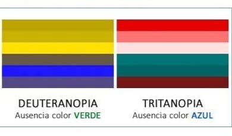
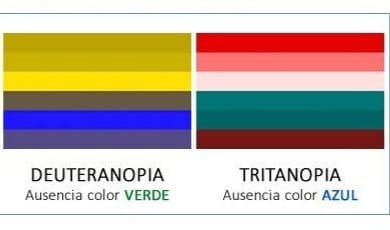

A pesar de que la sociedad en general considera que el daltonismo pasa inadvertido en la vida diaria, supone un problema para los afectados en ámbitos tan diversos como valorar el estado de frescura de determinados alimentos, identificar códigos de colores de planos o elegir determinadas profesiones para las que es preciso superar un reconocimiento médico que implica identificar correctamente los colores (militar de carrera, piloto, capitán de marina mercante, policía, árbitro de fútbol, entre otras). Puede detectarse mediante test visuales específicos como las cartas de Ishihara.
Es de carácter hereditario y está ligado al cromosoma X. En general, lo trasmiten las mujeres y lo padecen mayormente los hombres. Para que una mujer sea daltónica, tiene que tener afectados ambos cromosomas X, por lo que la frecuencia (0,5%) es muy inferior a la del hombre (1,5%).
Mujeres con daltonismo
Hombres con daltonismo
Personas con daltonismo en Argentina
La alteración al color se clasificará en:
- Deuteranopía: Alteración de la visión al color rojo. Puede ser total o parcial.
- Protanopía: Alteración de la visión al color verde. Puede ser total o parcial.
- Tritanopía: Alteración de la visión al color azul. Puede ser total o parcial.
- Acromatopsia: Ceguera al color.
Tipos de daltonismo:
 
